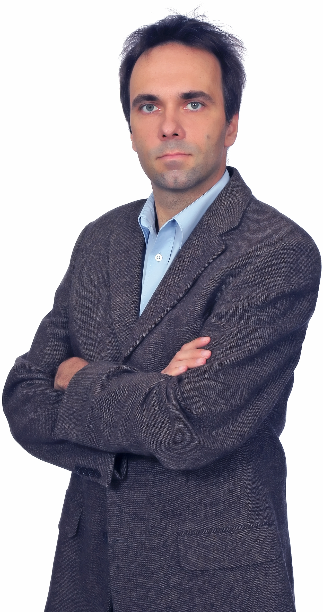
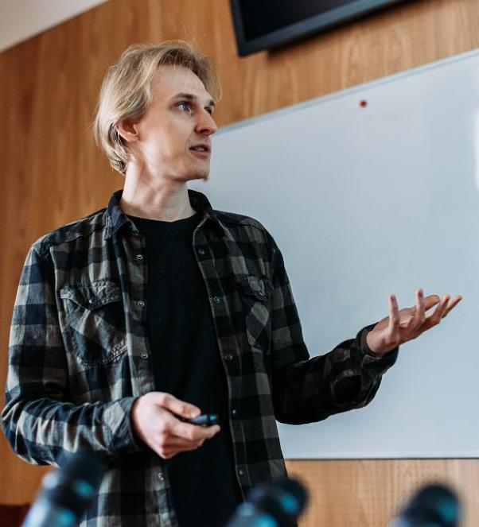
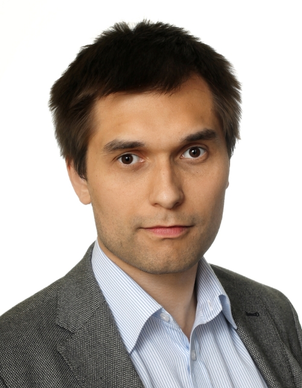
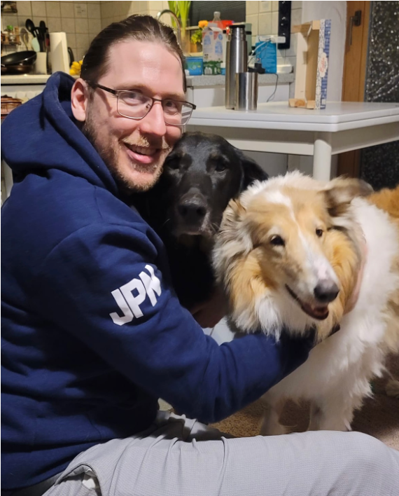
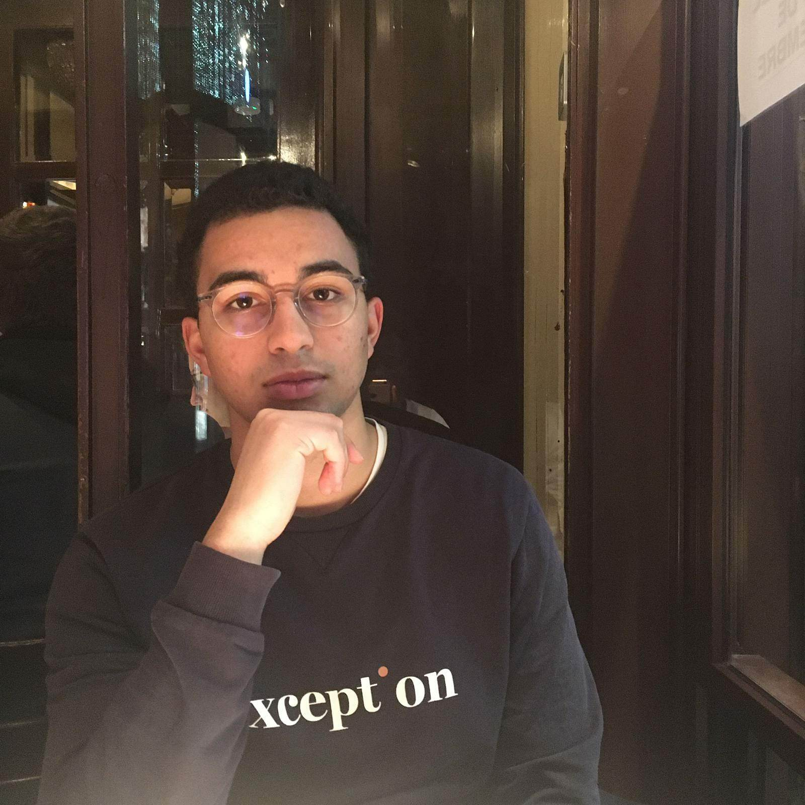
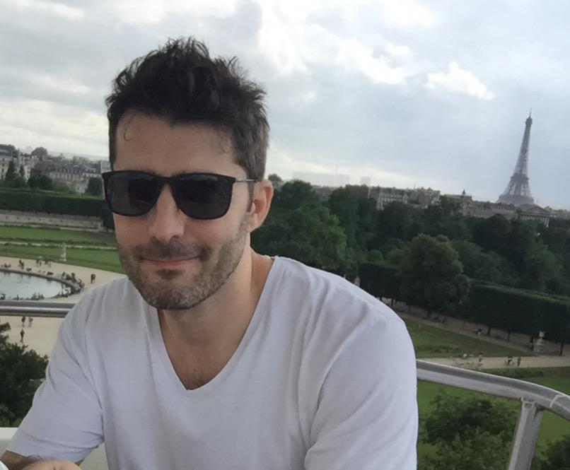
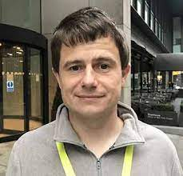
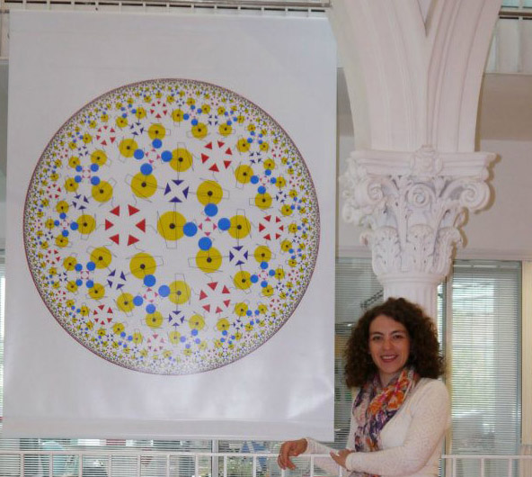
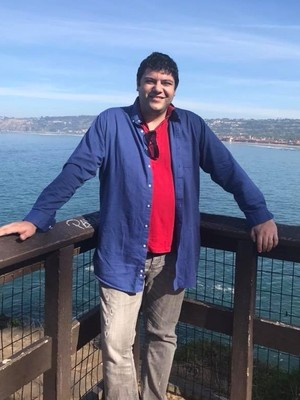

Dioscuri Centre in
Topological Data Analysis
Real world problems. Rigorous mathematics. Efficient solutions.
Current members of the Centre:
| Picture | Name | Location |
|---|---|---|
|  | Paweł Dłotko.Pawel is the director of the Centre. He is working in applied and computational topology. | IMPAN Warsaw |
 |
Niklas Hellmer. Niklas is a third year PhD student of the Centre. | IMPAN Warsaw |
 |
Davide Gurnari. Davide is a third year PhD student of the Centre. | IMPAN Warsaw |
|  | Michał Lipiński. Michał is a post-doc researcher of the Centre. | IMPAN Kraków |
 |
Bartosz Naskręcki. Bartosz is a Visiting Assistant Professor of the Centre. | IMPAN Poznań |
 |
Justyna Signerska-Rynkowska. Justyna is a Visiting Assistant Professor of the Centre. | IMPAN Gdańsk |
|  | Rafał Topolnicki. Rafal is a Visiting Assistant Professor of the Centre. | IMPAN Wrocław |
|  | Jan Felix Senge. Jan is a Visiting PhD student of the Centre. | ALTA Uni Bremen |
|  | Mathis Hallier. Mathis is a Visiting Master student of the Centre.. | University of Technology of Compiegne |
External and visiting members of the Centre:
|  | Ahmad Farhat.External collaborator. | Dubai |
|  | Simon Rudkin.External collaborator. | Uni Manchester |
|  | Radmila Sazdanovic.Sabbatical Visiting Professor. | NCSU |
Alumini:
|  | Anastasios Stefanou.Anastasios was a Visiting Assistant Professor of the Centre. | ALTA Uni Bremen |
Recruitment
We are seeking highly talented and motivated individuals who are willing to work with us on applied problems for which the concept of shape is important.
We have a number of positions available. We are very open to host Marie Curie researchers as well as industrial collaborators.Please contact Pawel Dlotko for further details.
Acknowledgement
We gratefully acknowledge the support from the Dioscuri Program.
Dioscuri Centres of Scientific Excellence - a programme initiated by the Max Planck Society (MPG), jointly managed with the National Science Centre in Poland (NCN), and mutually funded by the Polish Ministry of Science and Higher Education (MNiSW) and the German Federal Ministry of Education and Research (BMBF).